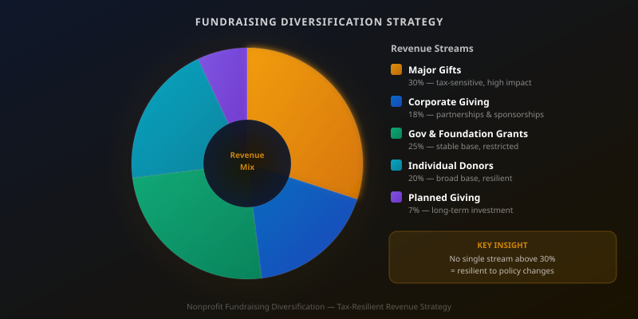

Nonprofit fundraisers don't write tax law. But tax law shapes giving behavior in ways that every development director needs to understand — not to take political positions, but to build a fundraising program resilient enough to perform across different policy environments. When the rules governing charitable deductions change, so do the incentives that influence how, when, and how much your donors give.
The relationship between tax policy and charitable giving is genuinely complex. Changes to the standard deduction, capital gains rates, estate tax thresholds, and donor-advised fund rules each affect different segments of the donor population in different ways. Understanding those mechanics — and how they apply to your specific donor base — is one of the most practically useful forms of financial literacy a development professional can develop.
How Charitable Deductions Actually Work

To deduct a charitable contribution, a taxpayer must itemize deductions on their federal tax return rather than taking the standard deduction. The standard deduction — which roughly doubled in 2018 and is periodically adjusted — means that for many households, itemizing simply doesn't produce a larger deduction than the standard amount, even accounting for charitable giving. These households have no direct federal tax incentive for individual charitable contributions, though state-level deductions vary.
When the standard deduction increases, fewer households benefit from itemizing, which reduces the effective tax incentive for charitable giving among middle-income donors. When it decreases, more households itemize and the incentive returns. This doesn't mean people stop giving when the incentive shrinks — many donors give regardless of tax treatment — but it does affect the decision-making calculus, particularly for donors who are deliberate about tax planning.
The Major Donor Dynamic
The relationship between tax policy and major donors is different and more significant. High-net-worth donors who make substantial gifts almost always itemize, making the charitable deduction consistently valuable to them. Changes to the top marginal income tax rate directly affect the after-tax cost of a major gift: at a 37% rate, a $10,000 gift costs the donor approximately $6,300 after the deduction; if that rate fell to 30%, the same gift costs $7,000. This is not trivial.
Major donors frequently consult with financial advisors before making significant gifts, and those advisors are attentive to the tax implications of charitable giving structures. Gifts of appreciated stock, charitable remainder trusts, and qualified charitable distributions from IRAs each carry distinct tax advantages that can make giving more attractive in certain policy environments. Development staff who can speak intelligently about these structures — even without providing tax advice — build credibility with sophisticated donors and their advisors.
The Middle-Donor Paradox
When changes in tax policy push more households toward the standard deduction, a counterintuitive dynamic can emerge. Organizations may see their number of individual donors remain stable or even grow — because the psychological and social motivations for giving are largely independent of tax treatment — while total revenue from individual donors declines. More people giving smaller amounts, less driven by year-end tax planning and more by immediate impact communication, creates a different fundraising program than one anchored by tax-sensitive major donors.
This isn't inherently bad. A broader base of smaller donors is often more resilient than a narrow base of large ones. But it requires different cultivation strategies, different communication approaches, and a different technology infrastructure to manage effectively. If your current program is built around serving 200 major donors well, it may need supplementing with the systems and messaging required to build and retain 2,000 smaller donors effectively.
Diversification as Strategy
The clearest lesson from any study of tax policy and fundraising is that programs concentrated in a single revenue source are vulnerable to policy changes affecting that source. A development program balanced across major individual gifts, planned giving, corporate sponsorships, government and foundation grants, and recurring small donors is far more stable across varying policy environments than one that relies heavily on any single stream.
For food banks specifically, government funding and grants often provide a stable base, but they come with restrictions and reporting requirements that limit operational flexibility. Individual giving — particularly unrestricted individual giving from a loyal recurring donor base — provides the operating margin that allows organizations to respond to emergencies, invest in infrastructure, and take program risks. Building that base requires consistent cultivation regardless of the current tax environment.
Understanding Your Donor Base's Tax Sensitivity
Not every donor base responds the same way to tax policy shifts. The first step in building a tax-resilient fundraising program is understanding which segment of your donors is most sensitive to tax incentives. If your major donor base consists primarily of business owners and investors who regularly make gifts of appreciated assets, tax changes affecting capital gains rates and charitable deduction limits will affect your revenue more directly than if your base consists primarily of retirees making modest annual gifts.
In Salesforce, you can segment your donor database by gift size, giving frequency, gift vehicle (cash, stock, DAF distribution), and giving trend over time. Overlaying this segmentation with a rough analysis of which segments are most likely to be tax-sensitive gives you a baseline for evaluating your exposure. Development directors who understand this about their own donor base are far better positioned to adapt their strategy proactively — rather than reacting to revenue declines after a policy change has already taken effect.